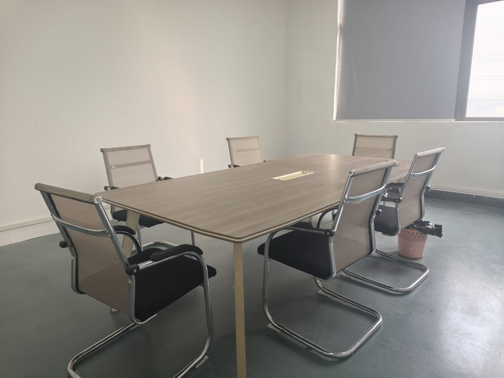

DME benefit management explained: where claims actually go wrong
Most DME claims are lost long before they reach a payer — in a missing signature, a diagnosis code that does not match the item, or a resupply that shipped two weeks early. This is the workflow that decides whether a supplier gets paid, and the documentation a manufacturer owes them.
What's in this guide
- What "benefit management" actually covers, in plain terms
- The five gates between an order and a payment
- The seven denial reasons that account for most lost revenue
- Rental versus purchase, and why the same product can be both
- Resupply: the rules that turn a good customer into a chargeback
- What a manufacturer must document so the supplier can bill
When a DME supplier says "we manage benefits", they are describing everything that happens between a clinician deciding a patient needs equipment and money arriving. It is not one task. It is verification, authorisation, coding, delivery proof, rental tracking, resupply scheduling, and audit response — and a gap in any one of them turns a delivered product into an unpaid invoice.
This matters to a manufacturer for a blunt reason: the supplier's margin is set by how many of their claims survive. If your documentation makes their paperwork harder, you are raising their effective cost even when your unit price is lower.
The five gates between an order and a payment
Every payer path looks slightly different, but the sequence is consistent. Fail at gate three and it does not matter how good gates one and two were.
| Gate | Question being answered | Failure looks like |
|---|---|---|
| 1. Eligibility | Is this patient covered, and for this category? | Delivered, then discovered inactive coverage. |
| 2. Medical necessity | Does the clinical record support this item? | A valid order that cites a diagnosis the item does not fit. |
| 3. Authorisation | Does this payer require prior approval for this code? | Shipped on a verbal yes; the payer wanted paperwork first. |
| 4. Coding and delivery | Is the code right, and can delivery be proven? | A similar-but-different item billed, no signed proof of delivery. |
| 5. Ongoing | Rental period, resupply windows, audit trail. | Resupply ahead of the allowed window; no record of who asked. |
The seven denial reasons that account for most lost revenue
Auditors and denials managers see the same short list over and over. None of it is exotic; all of it is procedural.
- No signature where one is required. An order that was never signed, or signed after delivery. The date matters as much as the signature.
- Diagnosis does not support the item. The code and the chart tell two different stories. This is the most expensive kind of denial because it is only fixable before dispatch.
- Item delivered does not match the order. Upgraded model, substituted accessory, or a configuration the ordering clinician never approved.
- Missing proof of delivery. No name, signature, or date showing who received the equipment and when.
- Authorisation bypassed. Someone confirmed eligibility but not the authorisation requirement for that specific code.
- Resupply outside the window. Sent because the patient rang, not because the rules permitted it — and the caller is rarely the patient.
- No record of the conversation. In audit, an unwritten call did not happen. Who requested it, what was discussed, what was shipped, and who said yes.
Rental versus purchase: the same product, two revenue models
Some categories are reimbursed as capped rentals — billed monthly up to a ceiling, after which ownership transfers to the patient. Others are purchased outright. Which one applies depends on how the payer classifies the item, not on what the item physically is. That means identical equipment can be a rental under one plan and a purchase under another, and misclassifying it does not just delay payment — it changes the shape of the revenue for the whole year.
For a manufacturer, the consequence is that the same product may show up in one supplier's catalogue as a rented item and in another's as a cash-sale item. That is not confusion; it is two go-to-market motions for one SKU. Products that are frequently bought with cash — a patient lift transfer chair is one, because the need is often immediate — need a specification page good enough to sell without a rep, because that is the entire due-diligence process for a family buyer.
Resupply: the rules that turn good customers into chargebacks
Resupply is where volume and compliance collide. Suppliers get repeat revenue from accessories and consumables, and payers watch for it. The tension produces a simple rule: contact frequency cannot be driven by a sales calendar, and every outreach has to be documented — who was contacted, what they said, whether they actually wanted the item, and whether the permitted interval had elapsed.
For durable equipment this mostly disappears — you do not resupply a steel frame. But it explains a structural difference between the equipment you sell and the supplies you might add later. Equipment revenue is lumpy and margin-heavy; supplies revenue is recurring and audit-heavy. A supplier adding a new equipment line is usually trying to buy back the first kind.
What a manufacturer owes the supplier's billing team
If the question is narrower — whether a patient lift transfer chair is covered at all, and under which benefit — start with does Medicare cover patient lift transfer chairs. This page picks up where that one stops.
This is the part most factories get wrong, and it is entirely within their control:
- A spec sheet that matches what ships. Not a marketing sheet. Weights, dimensions, seat-height range, load rating, and the difference between standard and optional.
- Load-test method and result. Method plus number. "Heavy duty" is not a test result.
- Exact regulatory status. Registered establishment, device listing, or neither — stated precisely, in the same words, on every document. Suppliers get audited on consistency.
- A stable product description. If the description drifts between the catalogue, the invoice, and the label, someone's coding breaks.
- Included versus optional, in writing. A commode bucket that is standard on one model and an add-on on another is a billing discrepancy waiting to happen.
Where this leaves a new supplier
Benefit management is not glamorous, and it is the reason DME has a moat: the paperwork is the business. A supplier who has built the workflow will not switch manufacturers to save two dollars a unit if it means re-validating documentation. That is also the opening for a new supplier — if your documentation is cleaner than the incumbent's, you are not asking them to take a risk, you are offering to reduce one.
For the wider picture — definitions, categories, and who buys what — start with our DME sector guide. If you are setting up as a supplier rather than sourcing, how to start a DME business covers accreditation, licensure, and payer enrolment in order.

FAQ
What is DME benefit management?
DME benefit management is the work a supplier does between an order and a payment: verifying the patient's coverage, confirming the equipment is medically necessary, getting prior authorization where the payer requires it, supplying the right billing code and documentation, and managing rental periods and resupply so the claim survives an audit. It is administrative work, but it decides whether the sale is profitable.
Why do DME claims get denied?
The most common reasons are documentation gaps rather than ineligible patients: missing or unsigned physician orders, a diagnosis that does not support the item, equipment delivered that differs from what was ordered or coded, missing proof of delivery, prior authorization not obtained, and resupply sent before the permitted window. Each is avoidable with a checklist applied before dispatch.
What is the difference between a rental and a purchase in DME?
Some equipment categories are paid as capped rentals: the supplier bills monthly up to a cap, after which the patient owns the equipment. Other items are purchased outright. Which applies depends on the payer's classification of the item, so the same physical product can be a rental under one plan and a purchase under another. Getting the classification wrong changes the entire revenue schedule.
What documentation should a manufacturer provide to help a DME supplier bill?
A spec sheet that matches what actually ships, the load-test method and result, the exact regulatory status (registered establishment, device listing, or neither), a consistent product description and weight so the item is coded correctly, and a clear statement of what is included versus optional. Suppliers cannot bill what they cannot document, and they pass that requirement back to the manufacturer.
Does benefit management matter for cash-pay equipment like transfer chairs?
Yes, in a different way. Cash-pay sales skip the claim entirely, but the buyer still needs the same facts: what the product does, what it fits, what is included, and what the regulatory status is. When a family or facility pays directly, the specification page becomes the entire due-diligence process.
Need documentation that survives an audit?
We supply patient lift transfer chairs with the paperwork a DME billing team asks for: spec sheet that matches the shipment, load-test method and result, FDA registration with device listing on file, and a written standard-versus-optional list. 150 kg capacity, manual, hydraulic, and electric, OEM and private-label available.
Request DocumentationThis article is a general explanation of DME billing workflow and is not legal, billing, coding, or compliance advice. Coverage rules and documentation requirements differ by payer, by state, and by product category — confirm current requirements with the relevant payer before relying on anything here.
Related guides you may want:
- DME explained: what durable medical equipment is and how it gets paid for
- What is DME? Durable medical equipment explained
- How to start a DME business
- How to choose a patient lift transfer chair manufacturer
- complete buying and specification guide
- How to assemble and install a patient lift transfer chair
- Accessories and add-ons explained
- Compact models for narrow doorways
- Patient lift transfer chair: manual, hydraulic and electric